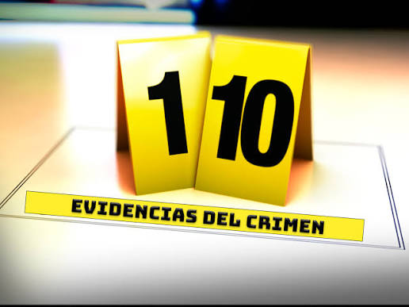

Descripción del incidente
El sujeto afirma haber entregado correctamente el archivo, aunque no existe evidencia conocida de dicha entrega.
Indicios encontrados
- No existe commit.
- No existe push.
- No existe captura.
- GitHub funciona con absoluta normalidad.
Evidencias del caso
Material recopilado

Evidencias del caso
Material recopilado